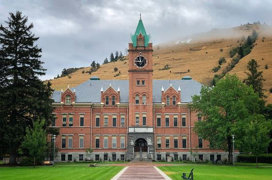
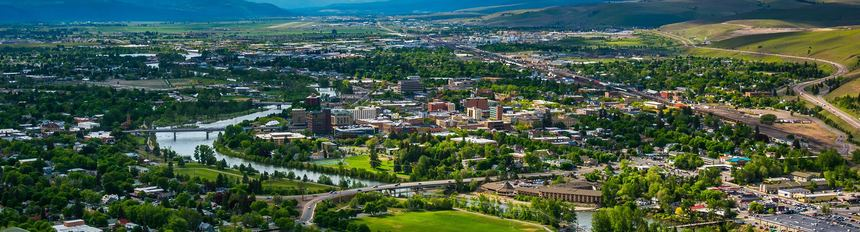
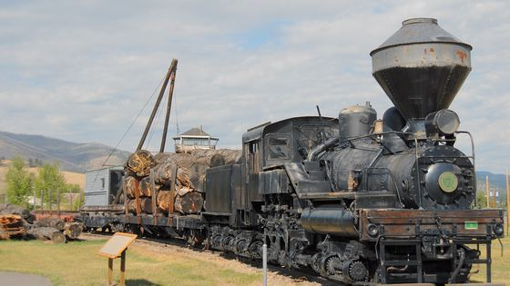

University District
Main Hall and Mount Sentinel
The M on the hillside is the easiest landmark in town to navigate by, and usually the first one people learn.

Within Reach is a plain-language directory of local assistance for people living in Missoula County. It answers the same four questions about every kind of help: who qualifies, what to bring, how to apply, and where to go.
Anyone in Missoula County who needs help with housing, food, utilities, healthcare or transportation. The site assumes no prior knowledge of how assistance programs work and no familiarity with the agencies that run them.
Most people looking for help are not browsing. They have one problem and a short window to solve it, often on a phone, sometimes on a weak signal. That is the person every page here is built for.
Five categories, no account, no tracking, and no search box to guess at. Every listing answers the four questions in the same order, so learning the pattern once makes every other listing take about ten seconds.
Pages are kept deliberately light. The heaviest page on this site is smaller than a single uncompressed photograph, because a directory that will not load on two bars of signal is not a directory.
A directory is only as good as its last update. A wrong phone number costs someone a trip across town they could not afford, which is worse than no listing at all.
Every listing carries a date, and that date is meant as a commitment rather than a decoration: it records when a person last confirmed the details with the agency. Who does that confirming, and how often, is the open question this project has not yet closed with the client.
The pictures here are of real places in Missoula: the Clark Fork riverfront, Main Hall below Mount Sentinel, the depot, and Fort Missoula. They are here because the brief asked for dignified images of the actual town rather than stock photography that presents hardship as something to pity.
None of them is a photograph of a service location, and none should be read as one.

University District
The M on the hillside is the easiest landmark in town to navigate by, and usually the first one people learn.

Northside
The brick depot north of the river, with the bronze bear standing out front where people arrange to meet.

Fort Missoula
Fort Missoula keeps the equipment that moved the timber this valley was largely built on.
These contact details are placeholders for the demonstration. Nothing below reaches a real office.
The one number on this site that is real is 988, the Suicide and Crisis Lifeline. It works 24 hours a day, by call or text, anywhere in the US.
Call or text 988 24 hours, every day